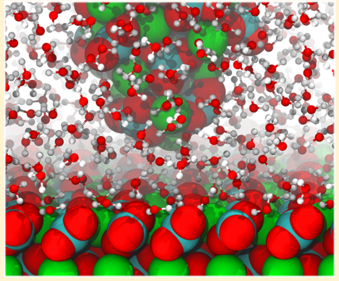
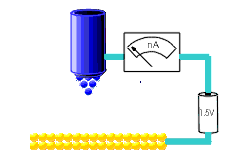
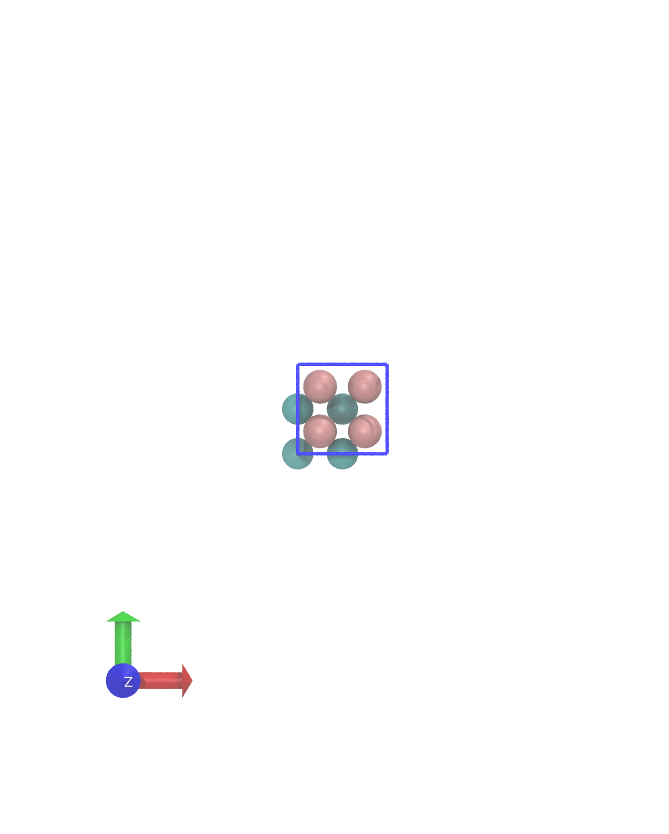
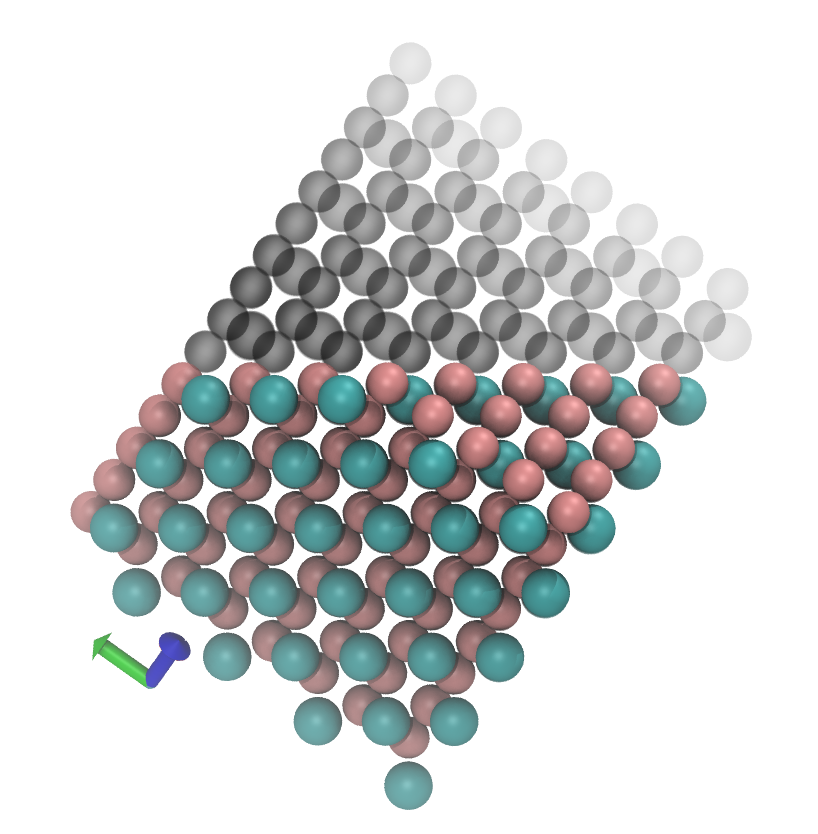
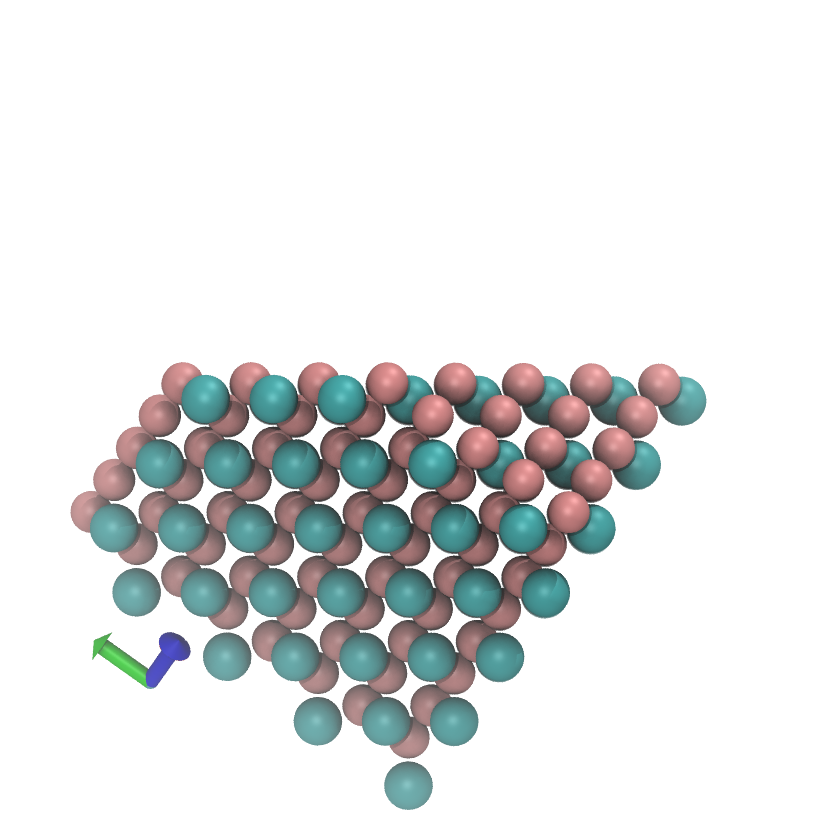
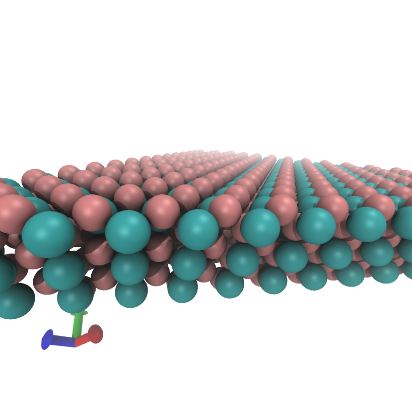
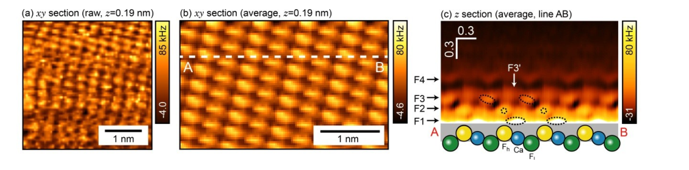
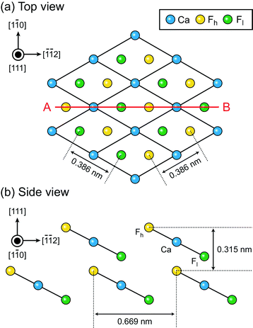
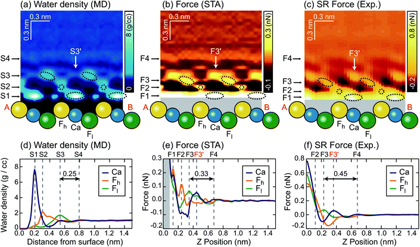

Murky Materials Modelling¶
|  |  |
What is objective reality?¶
Or What is a Scientific measurement?¶
Can we 'see' atoms?

Is mathematics produced by people, or found?

Can we see atoms?¶
Scanning probes¶
 |
Atomic force microscopy (left) and Scanning Tunnelling microscopy (right) |
 |
- Local measurements.
- Resolution of picometers ($10^{-12}$ m)
- Size of an atom is of the order 10 nanometers ($10^{-9}$ m)
What is a surface?¶
Start with a perfect crystal - use symmetry to build it...
What is a surface?¶

What is a surface?¶

What is a surface?¶

What is a surface?¶

What is a surface?¶
What is a surface?¶
What is a surface?¶
When a surface is cut, it is 'unhappy' and atoms move to find 'peace'.
Aside: Crystal Shape?¶
This is why crystals have different shapes - the expose the most stable surfaces most often.
 |

| 
|
Microscopes?¶
This is why crystals have different shapes - the expose the most stable surfaces most often.
 x100 |
 x500 |
 x3000 |
Science bit¶
How do SPMs get such high resolution imaging?
The trick is a highly non-linear signal
- STM the signal drops off exponentially (why?)
- AFM in attractive regime the signal drops off with large power of distance ($r^{-3}$ to $r^{-6}$)
- AFM in repulsive regime the signal drops off exponentially (why?)
AFM¶
Model the cantilever oscilations: $$ \ddot{z} + \omega_{0}^{2} \alpha \dot{z} + \omega_0^2 z - \frac{\omega_0^2}{k}F(z) = \frac{\omega_0^2}{k}F_{ext} $$
work in constant amplitude and frequency change $$ \ddot{z} + \omega_0^2 z - \frac{\omega_0^2}{k}F(z) = 0 $$
motion is periodic, we can find a solution of the form $$ \frac{\omega}{\omega_0}^2 = \frac{1}{\pi k A_1} \int_0^{2 \pi} F(z) cos (\tau) d\tau $$
Hofer, Werner A., Adam S. Foster, and Alexander L. Shluger. "Theories of scanning probe microscopes at the atomic scale." Reviews of Modern Physics 75.4 (2003): 1287.
Macro vs Nano¶
|
|
cantilever is macroscopic, tip apex is nanoscopic
experiment measures frequency change due to all interactions - macro + nano
Nottingham Nanoscience group's papers as PDFs
Phil is an extremely good guitarist;)
 |
2 sided strategy:manipulate both experiment and simulation data for comparison K Miyazawa, N Kobayashi, MW, AL Shluger, K Amano, T Fukuma, Nanoscale 8, 7334 (2016) |
 |
Modelling SPMs¶
Need a forcefield for classical calculations - bonds, angles, torsions, charges etc for all atoms
Or use Quantum Mechanical calculations (Density Functional Theory (~1000x slower) than forcefield)
For STM we need the electron density (LDOS), we need Quantum Mechanics
For AFM we need the to calculate the force on a tip model on a 3D grid (1000s of calculations)
Hofer, Werner A., Adam S. Foster, and Alexander L. Shluger. "Theories of scanning probe microscopes at the atomic scale." Reviews of Modern Physics 75.4 (2003): 1287.
Modelling SPMs¶
Need a forcefield for classical calculations - bonds, angles, torsions, charges etc for all atoms
Using classical potentials to 'pull' molecules onto a KCl surface.
Gaberle, J., Gao, D. Z., Watkins, M. B., & Shluger, A. L. (2016). Calculating the entropy loss on adsorption of organic molecules at insulating surfaces. The Journal of Physical Chemistry C, 120(7), 3913-3921.
What is objective reality?¶
Or What is a Scientific measurement?¶
Can we 'see' atoms?

Is mathematics produced by people, or found?
3D Solvation Structures on CaF$_2$¶
UHV measurements at 4K are all very well, but some applications require a more fluid environment
|
solar cells 
|
batteries 
|
photocathode / anodes 
|
and of course study of material processes like weathering, corrosion, catalysis
How do we see water density above a surface?¶
How do we see water density above a surface?¶
AFM - we'll see that this allows 3D mapping of the interface structure.
Theory: Solvent tip model¶
We don't know the actual tip apex - historical problem with AFM.
Hypothesize that there are likely strongly bound water molecules at the tip apex - and take them as the tip
They feed force back onto the cantilever.

M Watkins, B Reischl, The Journal of chemical physics 138, 154703 (2013)
Theory: Solvent tip model¶
We don't know the actual tip apex - historical problem with AFM.
Hypothesize that there are likely strongly bound water molecules at the tip apex - and take them as the tip

Statistical mechanical model¶
pure water model leads to
$$ \Delta\Delta G(\mathbf{r}) = -k_BT \ln \frac{\rho(\mathbf{r})}{\rho_{\rm{bulk}}} $$for the free energy change of bringing the tip model (water molecule) from the bulk liquid to $\mathbf{r}$
$$ F(\mathbf{r}) = \frac{\partial \Delta\Delta G(\mathbf{r})}{\partial z} = \frac{k_bT}{\rho(\mathbf{r})}\frac{ \partial \rho(\mathbf{r})}{\partial z} $$this is the 'short range' force exerted on the tip apex.
M Watkins, B Reischl, The Journal of chemical physics 138, 154703 (2013)
Experiment: fast AFM¶
3D AFM technique and pattern matching routines for massive speed up in image collection efficiency.
 |
|  |
-
Allows image collection within few minutes of exposure of surface to liquid
- (We also use it on the simulation data)
-
Enables data collection in pure water.
-
No longer true atomic resolution
K Miyazawa, N Kobayashi, MW, AL Shluger, K Amano, T Fukuma, Nanoscale 8, 7334 (2016)
Qualitative comparison of data¶
|  | # |
K Miyazawa, N Kobayashi, MW, AL Shluger, K Amano, T Fukuma, Nanoscale 8, 7334 (2016)
Conclusions¶
Many microscopes, much data, lots of ways of operating
Very successful collaborations between theory, computational and experimental groups to unravel the physics of systems.
Thanks to¶
- Leverhulme Trust and EU for funding
- Alex Shluger, University College London
- Takeshi Fukuma, Kanazawa University
- Adam Foster, Aalto
- Bernhard Reischl, Curtin University